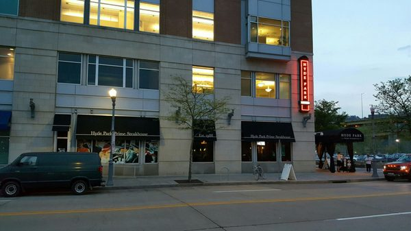

Work
I have worked in restaurants ever since high school. I started out by jumping from resturant to restaurnt, but the past few years, I have been working at Hyde Park Steakhouse on the north shore. I have not had any CS related jobs while in college, but am hopeful to get an internship in the upcoming fall.